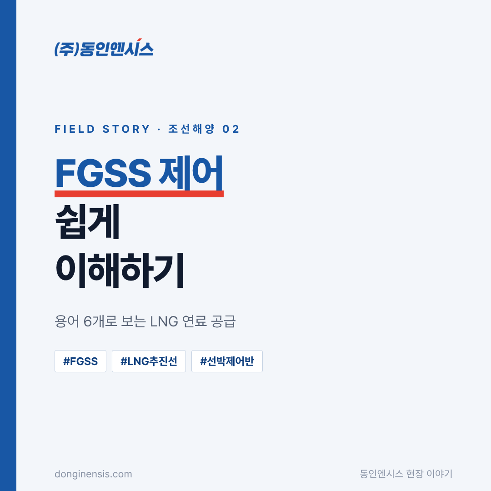
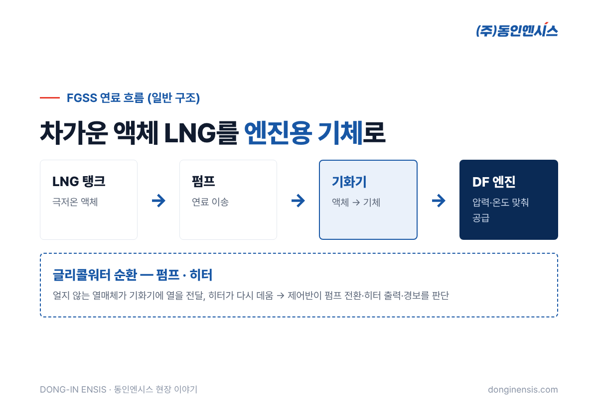
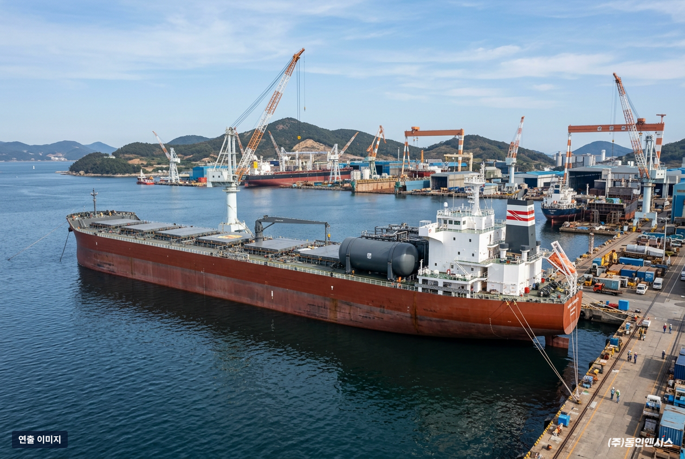
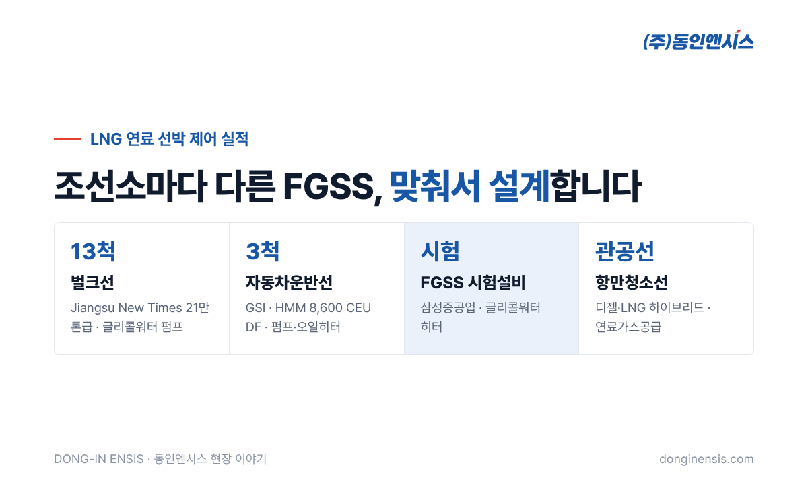
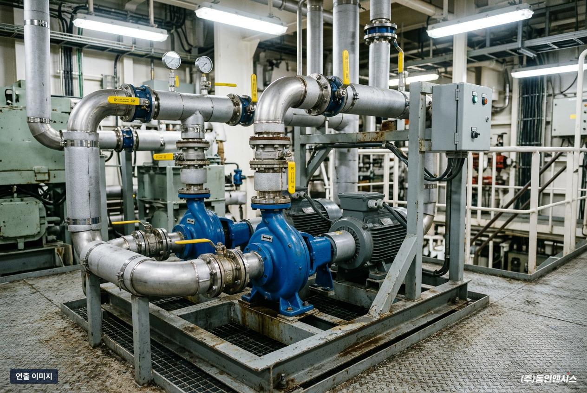

요즘 새로 짓는 배 가운데 LNG를 연료로 쓰는 배가 많아졌습니다. 이런 배에는 반드시 FGSS라는 설비가 들어가고, 그 FGSS를 안정적으로 돌리는 것이 제어반의 몫입니다. 이 글에서는 벌크선과 자동차운반선의 FGSS 펌프·히터 계통을 제어해 온 부산의 선박 제어반 제작사 동인엔시스가, FGSS 제어를 처음 접하는 분도 이해할 수 있게 핵심 용어 6개로 풀어 봤습니다.
배에서 나오는 배출가스에 대한 기준이 갈수록 엄격해지면서, 기존 선박 연료 대신 LNG를 쓰는 배가 늘고 있습니다. LNG는 연소할 때 나오는 오염물질이 상대적으로 적은 연료로 알려져 있습니다.
문제는 LNG를 다루는 방법입니다. LNG는 약 영하 162도의 아주 차가운 액체 상태로 보관하는데, 엔진은 이것을 알맞은 압력과 온도의 기체로 받아야 합니다. 이 차이를 메워 주는 설비가 바로 FGSS입니다.
탱크에서 엔진까지 연료가 흐르는 순서대로 용어를 짚어 보겠습니다.

Fuel Gas Supply System의 줄임말입니다. LNG 탱크에 담긴 액체 연료를 꺼내 기체로 바꾸고, 엔진이 요구하는 압력과 온도로 맞춰 보내는 설비 전체를 말합니다. 탱크, 펌프, 기화기, 히터, 배관과 밸브가 하나의 공정으로 묶여 있습니다.
Dual Fuel의 줄임말로, LNG와 기존 연료를 모두 쓸 수 있는 엔진입니다. 상황에 따라 연료를 바꿔 쓸 수 있어 LNG 연료 선박에 많이 쓰입니다. DF 엔진이 LNG 모드로 돌 때, 그 연료를 대 주는 것이 FGSS입니다.
액체 LNG를 기체로 바꾸는 열교환기입니다. 아주 차가운 LNG를 기체로 만들려면 열을 줘야 하는데, 이 열을 전달하는 매개체가 다음 용어인 글리콜워터입니다.
물에 글리콜을 섞어 쉽게 얼지 않게 만든 열매체입니다. 극저온 LNG와 열을 주고받아도 얼어붙지 않기 때문에, 기화기와 히터 사이를 돌면서 LNG에 열을 전달하는 역할을 합니다. 글리콜워터가 제대로 돌지 않으면 기화가 불안정해지고, 엔진으로 가는 연료 상태도 흔들립니다.
글리콜워터를 계통 전체로 순환시키는 것이 펌프, 식은 글리콜워터를 다시 데우는 것이 히터입니다. 엔진이 연료를 많이 쓰면 더 많은 열이 필요하므로, 펌프 유량과 히터 출력을 상황에 맞게 조절해야 합니다. 보통 예비 펌프를 두어, 한 대에 문제가 생기면 다른 펌프로 넘어가게 구성합니다.
FGSS 제어반은 이 모든 장치를 순서와 조건에 맞게 움직입니다. 펌프를 켜고 끄는 순서, 운전 펌프와 예비 펌프의 전환, 글리콜워터 온도에 따른 히터 출력 조절, 압력·온도가 범위를 벗어날 때의 경보와 정지가 모두 제어반이 판단하는 일입니다. 바다 위에서 쉬지 않고 돌아야 하므로, 선박용 기준에 맞춘 설계와 승인 절차를 거쳐 만듭니다.

용어를 알고 나면 제어반이 왜 까다로운지도 보입니다. 저희가 설계 단계에서 특히 꼼꼼히 보는 부분은 다음과 같습니다.
동인엔시스는 여러 조선소의 LNG 연료 선박에서 FGSS 펌프·히터 계통의 제어를 맡아 왔습니다.
같은 FGSS라도 배의 크기와 엔진 구성, 조선소의 설계 방식에 따라 제어 범위가 달라집니다. 그래서 프로젝트마다 요구사항을 먼저 확인하고 그에 맞춰 설계합니다. 해외 조선소 프로젝트는 선급 규칙과 문서 요구도 함께 맞춰야 하므로, 도면 승인부터 시운전 일정까지 조선소와 긴밀하게 조율합니다.

이런 제어반은 흔들리는 바다 위에서, 극저온 연료를 다루며, 쉬지 않고 돌아야 합니다. 펌프 한 대의 상태 변화도 놓치지 않고 경보를 내고, 문제가 생기면 예비 설비로 넘어가는 구조가 몸에 밴 이유입니다.
동인엔시스는 이 경험을 육상 공장용 지능형 제어반으로 넓히고 있습니다. 펌프와 모터의 온도·전류·진동을 제어반이 직접 기록하고 알리는 방식입니다. 까다로운 선박 현장에서 다듬어진 제어 기준이 공장 설비 데이터의 신뢰를 받쳐 줍니다.

Q. FGSS 전체를 공급하나요, 제어만 하나요? 동인엔시스가 맡는 부분은 FGSS 안의 펌프·히터 등을 움직이는 제어시스템입니다. 범위는 프로젝트마다 조선소·기자재 업체와 협의해 정합니다.
Q. 기존 선박의 FGSS 제어반 개조도 가능한가요? 상담할 수 있습니다. 기존 도면과 선급 요구사항을 먼저 확인한 뒤 가능한 범위를 말씀드립니다.
Q. LNG 말고 다른 친환경 연료 선박도 하나요? 디젤·전기 하이브리드 추진선과 수소추진선박 통합제어 실증에도 참여하고 있습니다.
FGSS는 LNG를 엔진이 쓸 수 있는 연료로 바꿔 주는 설비이고, 그 안의 펌프와 히터를 정확하게 움직이는 것이 FGSS 제어입니다. 2006년부터 해상용 전기제어시스템을 만들어 온 경험으로, 조선소와 기자재 업체의 요구에 맞춰 설계합니다.
홈페이지 적용 분야의 조선·해양 페이지에서 더 많은 선박 제어 사례를 보실 수 있습니다.
문의 051-862-3668 / dongin@donginmne.com
아래 질문 중 하나에 실제 경험으로 답해 본문 적당한 곳에 넣어 주세요. 사람이 직접 쓴 문장이 들어가면 네이버에서 저품질 위험이 줄고 노출에 도움이 됩니다.